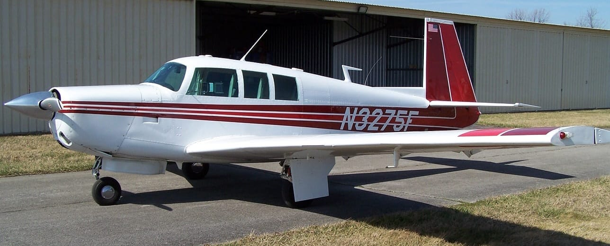

Three Chopt Flying Club
A non-profit flying club at Charlottesville-Albemarle Airport, flying a club-owned Mooney M20F.
About Us
Three Chopt Flying Club is a non-profit organization dedicated to making flying accessible for aviation enthusiasts in the Charlottesville area. We own a Mooney M20F that members use for training and recreational flying.
Membership
We are currently interviewing prospective members. We would love the opportunity to tell you more about our Club and see if you are a good fit. These pages describe the process, list the requirements, and provide the documents you need to join.
Getting Started
Interested in joining? Here's how:
- Review our membership requirements
- Come to a cookout, or contact us to schedule a visit
- Complete the application process
Purpose
We were founded to create opportunities for local pilots to come together and share their enthusiasm for aviation. We are a non-profit 501(c)(7) social club whose members fly together and attend social events together.
We hold cookouts the first Saturday of each month from 11:30am–1:30pm outside the Charlottesville Flight Center at the airport.
Safety First
Safety is our top priority. We maintain our aircraft to the highest standards and require all members to follow strict safety protocols. Regular safety meetings and continuing education are part of our commitment to safe operations.
Location
Our hangar is on the south side of Charlottesville-Albemarle Airport (KCHO).
Most of our meetings take place at the Charlottesville Flight Center, 200 Aviation Dr, Charlottesville, VA 22911.